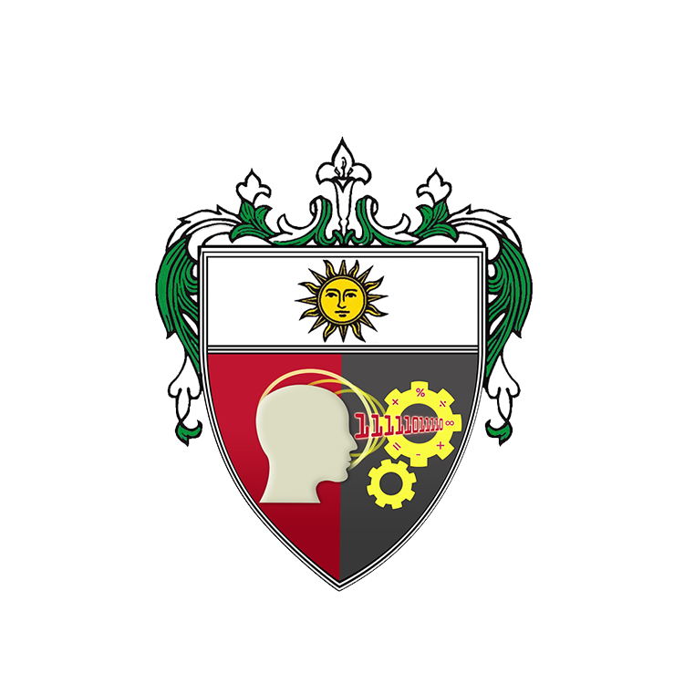

The College of Information and Computing Sciences was formally established in 2014, with its separation as an independent academic unit from the Faculty of Engineering. Its programs trace their histories to the College of Science (for Computer Science), the College of Commerce and Business Administration (for Information Systems), and the Faculty of Engineering (for Information Technology).
The Institute of Information and Computing Sciences of the University of Santo Tomas, under the inspiration of its model, Saint Thomas Aquinas, and its patron, Saint Vincent Ferrer, declares its commitment to the pursuit of truth and the formation of technically competent ITE professionals endowed with a strong commitment to lifelong learning, social responsibility and a desire for leadership in the spirit of service in their respective fields of specialization.
The Institute of Information and Computing Sciences envisions itself as a premier and innovative institution in Information Technology Education and research in the Asia-Pacific Region.
Bachelor of Science in Computer Science (BSCS) is a four-year program that includes the study of computing concepts and theories, algorithmic foundations, and new developments in computing. The program prepares its students to design and create algorithmically complex software and develop new and effective algorithms for solving computing problems.
The Bachelor of Science in Information Technology (BS IT) is a four-year program that students are trained to be well versed in the practical and technical know-how of installing/setting-up of computers and computer networks. Special skills taught include troubleshooting and repairing of hardware components.
The Bachelor of Science in Information Systems (BS IS) is a four-year program that focuses on using technology and information to solve business and organizational problems. Students learn about areas such as systems analysis and design, databases, business processes, and information technology management. The program prepares students to develop and manage information systems that help organizations improve their operations and decision-making.
Address:2/F Saint Pier Giorgio Frassati Building University of Santo Tomas España Boulevard, SampalocManila Zipcode:1008, Philippines Telephone:+63-2-3406-1611 local 8518